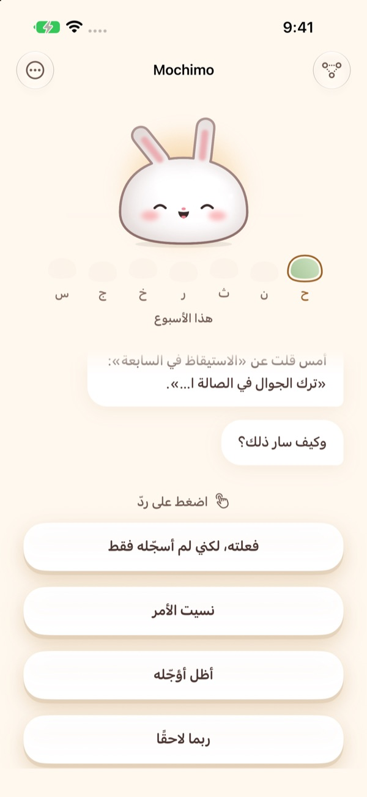
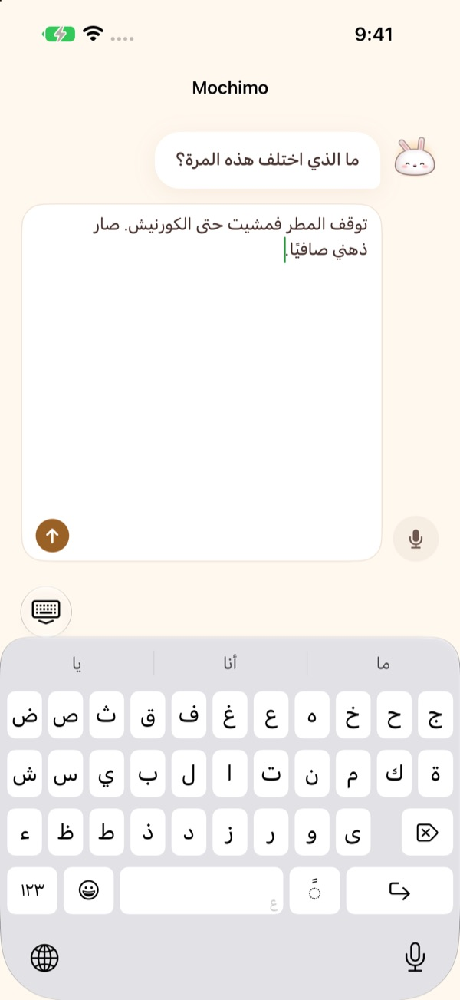
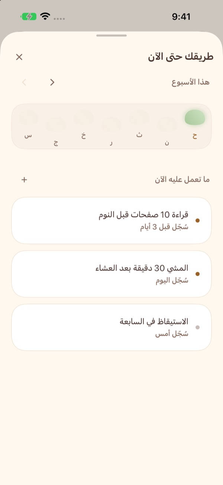
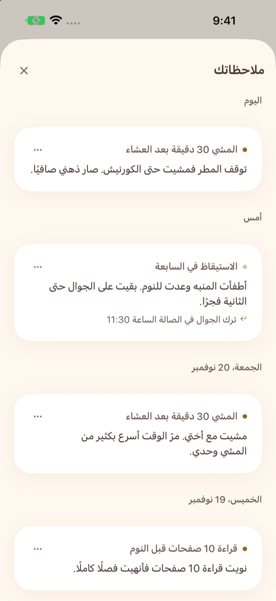

يوم صعب؟
لا بأس
في اليوم الذي يفوتك فيه هدفك، يبدأ صديقك الموتشي الحديث أولًا. يسألك عمّا حدث لا عمّا أخطأت فيه، ثم يعيد إليك ما حدث وما تشعر به كأمرين منفصلين.
الحديث واليوميات وطريقك حتى الآن مجانية. بلا تسجيل ولا إعلانات.

تحدّث مع صديقك الموتشي
كنت تنوي المشي مساء اليوم ولم تفعل. اختر ردًّا أو اكتب ردك، وسيجيبك صديقك تمامًا كما في التطبيق.
حين لا يسير يومك كما خططت، هل تلوم نفسك؟
في الليلة التي تفوّت فيها التمرين، أول ما يخطر لك غالبًا: «ما بي؟». لكن انظر عن قرب: كان الدوام طويلًا، والطقس سيئًا، وكنت منهكًا. يسألك Mochimo عمّا حدث وعن شعورك كلٌّ في دوره، ثم يضعهما جنبًا إلى جنب. وحين ترى أن الظروف هي السبب لا إرادتك، يصبح العثور على الخطوة الصغيرة التالية أسهل.
صديقك يبدأ الحديث أولًا
حدّد هدفًا، وسيتابع صديقك معك الأيام التي نجحت فيها والأيام التي تعثّرت فيها. وإن فاتك يوم، يسألك «ماذا حدث؟» بدلًا من «لماذا لم تفعل؟»، ويتذكر ما أخبرته به في المرة الماضية ليسألك كيف سارت الأمور بعدها.
في الأيام التي تثقل فيها الكتابة، تكلّم فقط. يجري التعرّف على الكلام على جهازك ولا تُحفظ أي تسجيلات.

أسبوعك في سبع قطع موتشي صغيرة
يظهر كل أسبوع في صورة سبع قطع موتشي صغيرة. الأيام التي نجحت فيها تصبح بلون الماتشا الأخضر، والأيام التي سجّلت فيها فقط تصبح ذهبية. والأيام التي فاتتك تبقى في مكانها أيضًا، فلا شيء يُمحى.
حتى مع يوم أو يومين ناقصين، ترى أن أسبوعك ما زال متصلًا.

عُد إلى ما كتبته
ما حدث وما شعرت به وما ستجربه في المرة القادمة يتراكم حسب التاريخ. عُد إلى يوم تعثّرت فيه بالطريقة نفسها وسترى ما الذي نجح.
تعرض أداة الشاشة الرئيسية كلمة من صديقك، ويذكّرك تنبيه في الوقت الذي تختاره بأن تراجع يومك.

ثلاث خطوات للبدء
- 1
دوّن هدفًا واحدًا
شيئًا مثل «المشي 30 دقيقة بعد العشاء».
- 2
افتح التطبيق في نهاية اليوم
يسألك صديقك كيف كان يومك. فعّل التذكير حتى لا تنسى.
- 3
اختر ردًّا أو اكتبه
يمكنك التوقف في أي وقت بـ
ربما لاحقًا.
هكذا يسير الحديث
- ما حدث
- الوقائع فقط: ما الذي اعترض طريقك
- الشعور
- اختر شعورك الآن من خمس درجات
- نظرة إلى الوراء
- يعيد إليك صديقك ما حدث وما تشعر به، كلٌّ على حدة
- الخطوة التالية
- تختار شيئًا صغيرًا، وخمس دقائق تكفي
- الختام
- في يوم صعب جدًا لا يسأل أكثر ويقترح عليك أن ترتاح
يمكنك المغادرة في أي لحظة، ويُحفظ ما قلته حتى الآن.
الحديث واليوميات مجانية. وPro موجود إن أردت المزيد.
مجاني
- كل الأحاديث مع صديقك
- حتى ثلاثة أهداف
- التحدث بصوتك بدلًا من الكتابة
- طريقك حتى الآن وكل ما كتبته
- أداة الشاشة الرئيسية والتذكير اليومي
- القفل برمز دخول
Mochimo Pro
- أهداف بلا حدود
- ستة ألوان لصديقك
- تصدير يومياتك في ملف نصي
اشترِ مرة واحدة واحتفظ به، أو اشترك شهريًا أو سنويًا.
لا تظهر شاشة دفع أبدًا في منتصف الحديث. على جهاز جديد أو بعد إعادة التثبيت، اضغط «استعادة المشتريات» في الإعدادات.
أسئلة
هل عليّ أن أشرح كل يوم فاتني؟
لا. اضغط ربما لاحقًا في أي لحظة وينتهي الحديث فورًا. ما قلته حتى الآن محفوظ، فيمكنك العودة إليه لاحقًا.
فعلت ما عليّ، لكن التطبيق يقول إنني لم أفعل.
اضغط فعلته، لكن لم أسجّله. يأخذ صديقك التصحيح ويسألك بدلًا من ذلك عمّا ساعدك. يُحفظ ما نجح معك، ويذكّرك به في المرة القادمة التي تتعثّر فيها.
أين يذهب ما أقوله بصوتي؟
يتحول كلامك إلى نص على جهازك ولا يُحفظ التسجيل أبدًا. وعلى الأجهزة المدعومة تُرتَّب كلماتك لتصبح أسهل في القراءة، وهذا يحدث على الجهاز أيضًا.
كم هدفًا يمكنني أن أضع؟
ثلاثة مجانًا. وحين تنتهي من هدف، استخدم ضعه جانبًا في «طريقك حتى الآن» لتفسح مكانًا. ولأكثر من ثلاثة تحتاج إلى Mochimo Pro.
هل Mochimo Pro اشتراك؟
لك أن تختار: شراء لمرة واحدة تحتفظ به، أو اشتراك شهري أو سنوي يتجدد تلقائيًا حتى تلغيه من إعدادات حسابك على App Store. على جهاز جديد أو بعد إعادة التثبيت، اضغط استعادة المشتريات في الإعدادات.
هل يستطيع أحد غيري قراءة يومياتي؟
لا يوجد حساب. تبقى سجلاتك على جهازك وفي حسابك على iCloud فقط، ويمكنك قفل التطبيق برمز دخول من الإعدادات. لا يُرسل أي شيء تكتبه إلى المطوّر، ويمكنك أيضًا إيقاف إحصاءات الاستخدام المجهولة من الإعدادات.
كيف أغيّر وقت التذكير؟
اذهب إلى تذكير يومي في الإعدادات لتشغيله أو إيقافه واختيار الوقت.
هل يذكّرني صديقي بنجاحاتي السابقة؟
نعم. حين تذكر شيئًا نجح معك من قبل يتذكره صديقك، وفي اليوم الصعب يذكّرك بشيء أنجزته مؤخرًا.
كيف أحذف كل شيء؟
اضغط حذف كل السجلات في الإعدادات. تُحذف أهدافك وسجلاتك نهائيًا، بما في ذلك على أجهزتك الأخرى المتزامنة عبر iCloud. تبقى إعداداتك ومشترياتك. ومع Pro يمكنك حفظ نسخة أولًا بـ تصدير السجلات.
كيف أتواصل معكم؟
استخدم «راسل المطوّر» في إعدادات التطبيق، أو راسلنا على البريد أدناه.
لديك سؤال أو ملاحظة؟ راسلنا على leeo@kakao.com.